After personally staying at nearly every luxury hotel in wine country, here's exactly where I'd spend my own money.
Most "best hotel" lists are compiled from online reviews or press materials. This one isn't.
Over the past several years, I've personally stayed at nearly every luxury hotel in Napa & Sonoma — every ranking below reflects my own experience, both as a luxury travel advisor and as a frequent visitor to wine country.
Whether you're planning a honeymoon, anniversary, girls' getaway, or long weekend, this guide is designed to help you choose the hotel that's actually right for your trip.
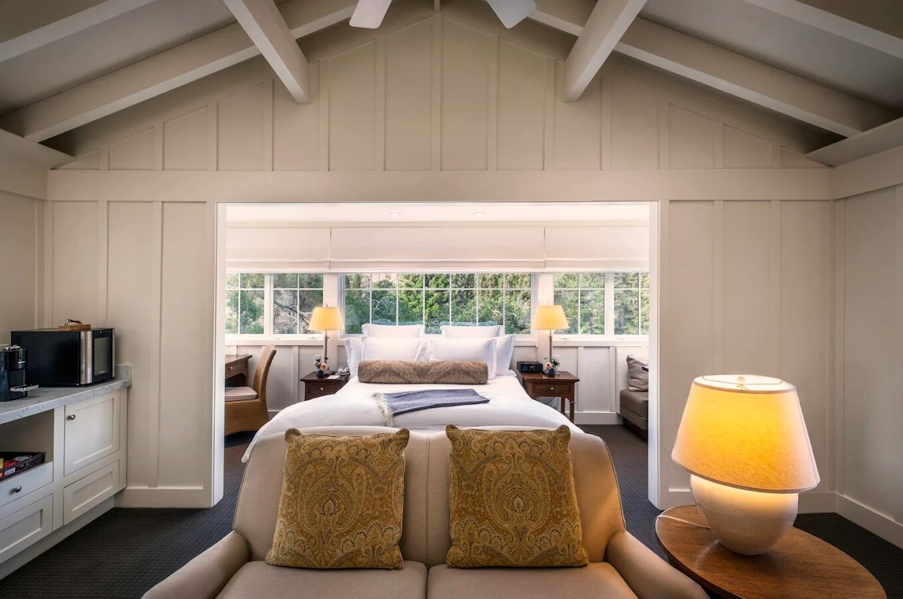
The Benchmark
Perfect For · Honeymoons, Celebrations, Wine Lovers, Returning Visitors
There's something so special about Meadowood, and it's sort of hard to put your finger on it. Service is at Aman quality standards, with a real sense of place, spacious and fairly private cottages, a beautiful spa, and thoughtful turndown treats each evening. It's a small property — around 40 cottages — and there really isn't a bad room to be had.
Mind the stairs. About 90% of rooms aren't fully accessible, though buggies are available for those with mobility concerns.
It skews a bit older. The property tends to attract 40+ couples, though there's a family pool and it works well solo too.
The tennis facility is a hidden gem. Beautiful courts with instructors I'd recommend in a heartbeat.
Every time I go to Meadowood, I feel well taken care of — and I can't say that about every property on this list.
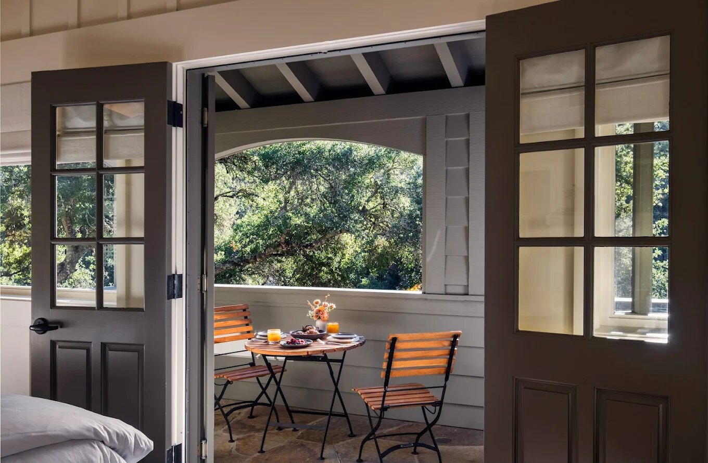
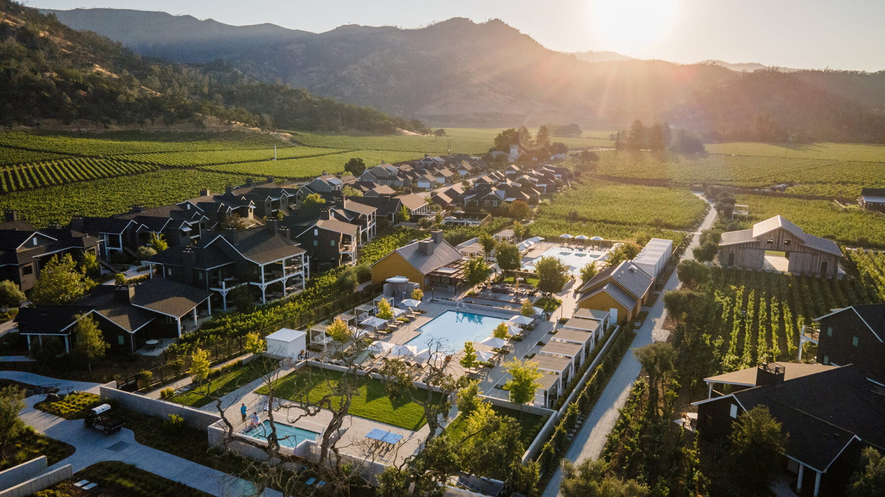
Consistently Excellent
Perfect For · Families, Girls Trips, Couples, Groups
I've stayed at Four Seasons four or five times now, and since they've worked out the early kinks, I think they've earned the #2 spot. Architecturally the hotel is beautiful, with a mix of dark, moody rooms and bright white farmhouse styles set within the vineyards. The pools are gorgeous, the 1-star Michelin restaurant is fantastic, and I love the pool bar.
Service is Four Seasons standard. This is genuinely what separates it from the property just below it on this list.
The ground-floor showers are oddly exposed to the pathways. You can close the curtain, but it's a strange design choice.
It fits a huge range of travelers. Families, couples, girls trips, and multi-couple groups all work well here.
It's a great property that lends itself to a large swath of people.
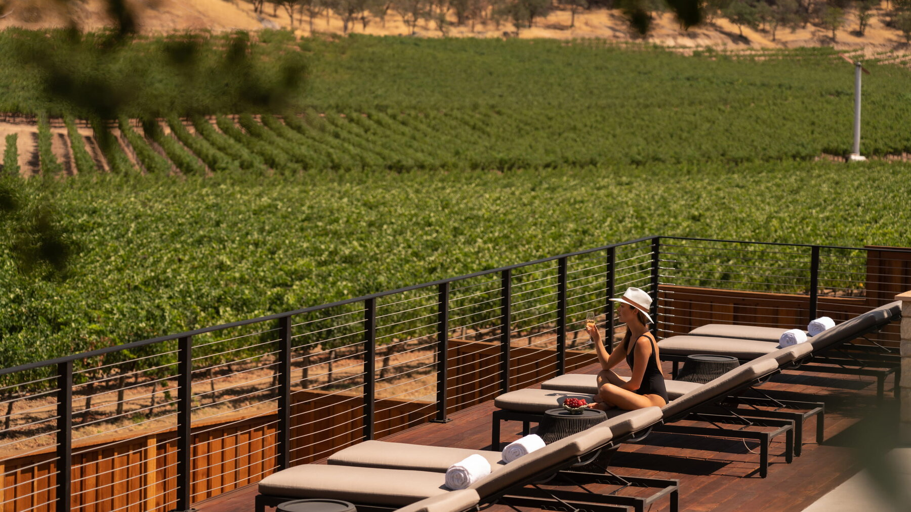
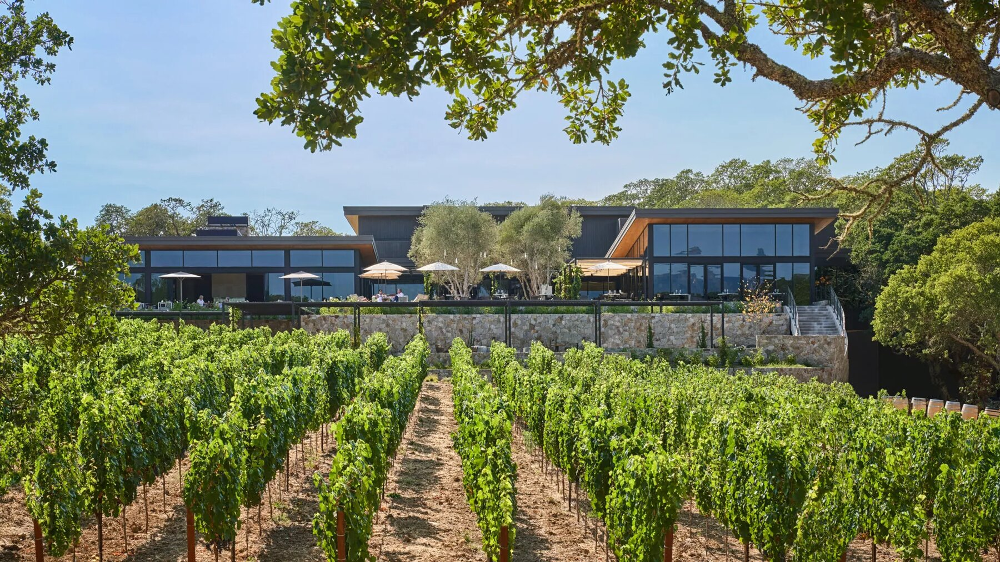
A Home Away From Home
Perfect For · Wine Lovers, Couples, Returning Visitors
I love the Montage and have stayed there at least 20 times over the past few years. It's perfectly situated just outside downtown Healdsburg, close to wineries, with a complimentary shuttle to the plaza. The dining has perhaps the best view of any restaurant on this list, and I actually prefer the vineyard rooms over the mountain or oak rooms.
Book a vineyard room. Waking up and sitting by your fire pit overlooking the vineyards never gets old.
Service has slipped slightly in recent visits. As has some wear and tear on the finishes — nothing major, but worth knowing.
They remember you. One masseuse in particular I make a point to see every time I go.
It's just a great property, and I feel lucky I've spent so many nights there.
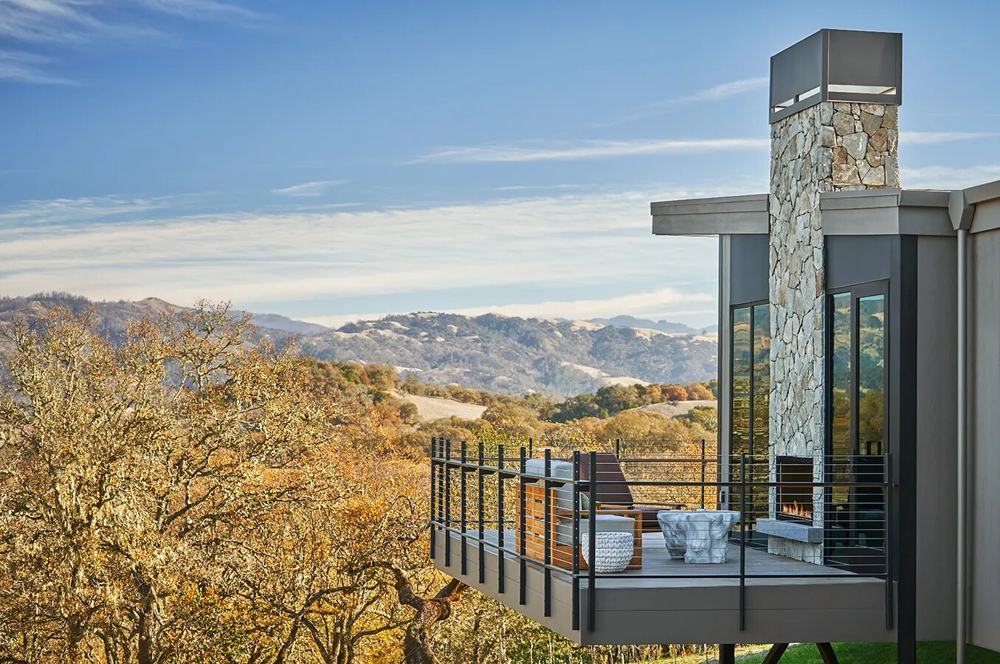
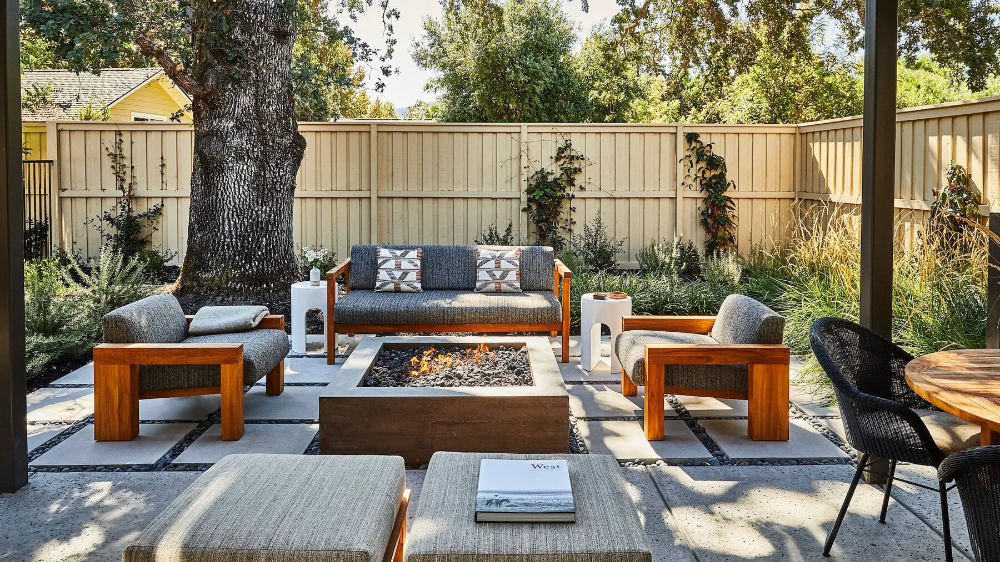
Iconic California Design
Perfect For · Younger Couples, Families, Girls Trips
Solage is sort of iconic and really defines California wine country luxury. It's further down this list because it doesn't have the service standards of the properties above, and it's starting to feel a bit dated — especially the spa. That said, I love the design, and most rooms have a private garden or terrace, some with private hot tubs.
Great for full privacy. If you need a completely private terrace, Solage is one of the best options on this list.
The spa could use a refresh. It's a big reason people book here, so this is worth knowing before you go.
Rates run lower than the properties above. A strong cost-to-experience option in Calistoga.
A fantastic hotel — just not quite at the level of the three above it.
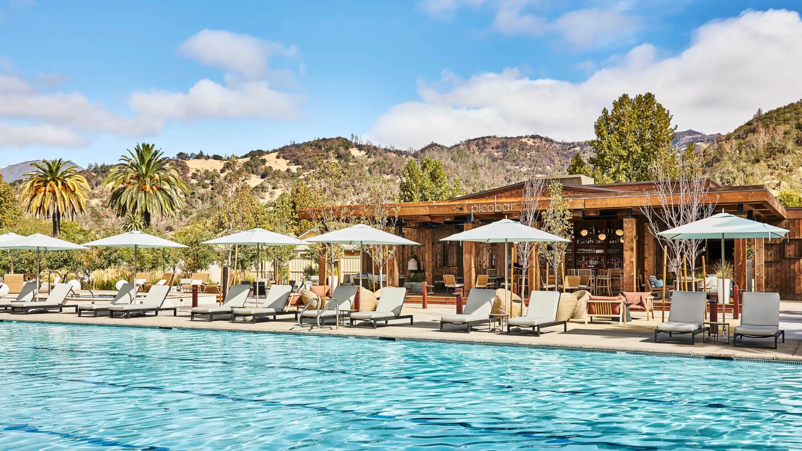
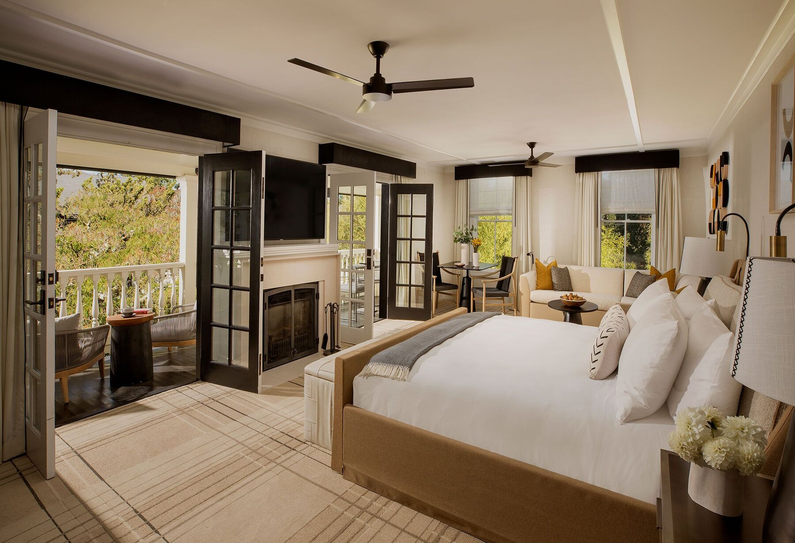
Sonoma's Hidden Gem
Perfect For · Returning Visitors, Walkability, Wine Tasting
I love MacArthur Place and think it's such a hidden gem in Sonoma. It's right next to downtown, so you can walk or bike into town, the design is beautiful, prices are reasonable, and the pool just finished an extensive remodel. It's also just an easy getaway from San Francisco.
Easiest walk to town on this list. No worrying about driving back after a few glasses of wine.
The spa is lackluster. It's the one weak point compared to the top four.
Downtown Sonoma itself is a big draw. Quaint, local, and less commercialized than Healdsburg, with easy access to Glen Ellen.
A great option for return visitors who'd rather not drive back to their hotel every night.
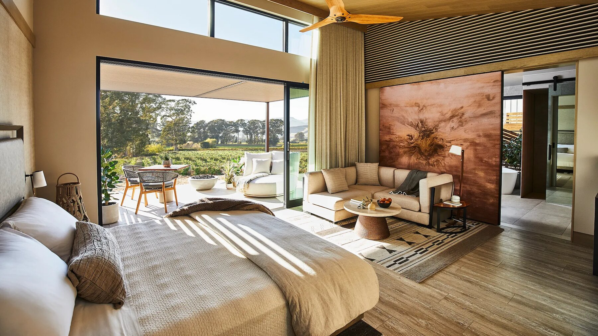
Beautiful, But Not Quite Wine Country
Perfect For · Younger Couples, Wellness Travelers, Design Lovers
Stanly Ranch might be the most architecturally striking hotel on this list. The spa is arguably the prettiest here, every room has a large outdoor terrace with a fire pit, and Bear, the main restaurant, is one of the more interesting dining options in Napa.
The location doesn't quite deliver the classic wine country feeling. It's convenient to both Napa and Sonoma, but sits out in the marshes.
Privacy on the terraces is limited. Despite the indoor-outdoor design emphasis, many terraces offer almost none.
Lighting controls are unintuitive. A small but recurring frustration across stays.
Beautiful, but I don't find myself wanting to go back as often as the hotels above it.
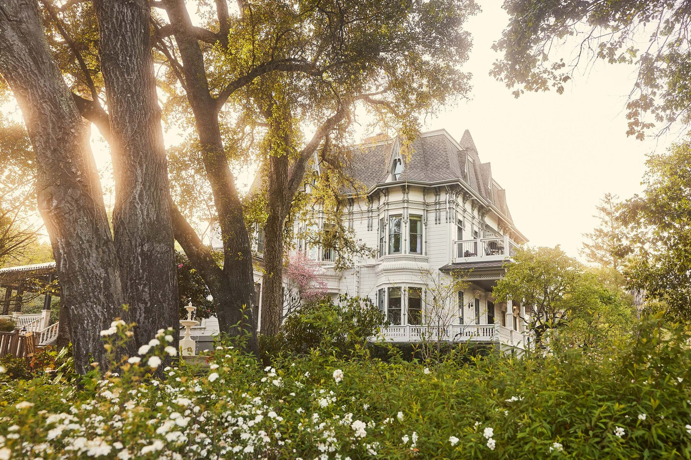
An Estate, Not a Hotel
Perfect For · Couples, Romantic Getaways
Madrona Manor feels completely different from every other hotel on this list — more like staying at someone's incredibly beautiful estate than a traditional luxury hotel. The design by Jay Jeffers is stunning, and sitting on the front porch with a glass of wine overlooking the vineyards is one of my favorite experiences anywhere in Sonoma County.
No spa, and the pool is underwhelming. The main drawbacks on an otherwise special property.
Hop on an e-bike into Healdsburg Plaza. Just a few minutes away, while the property itself stays peaceful.
This is a couples property. I wouldn't recommend it for families.
An easy recommendation for a romantic weekend with beautiful design and one of the most charming atmospheres in wine country.
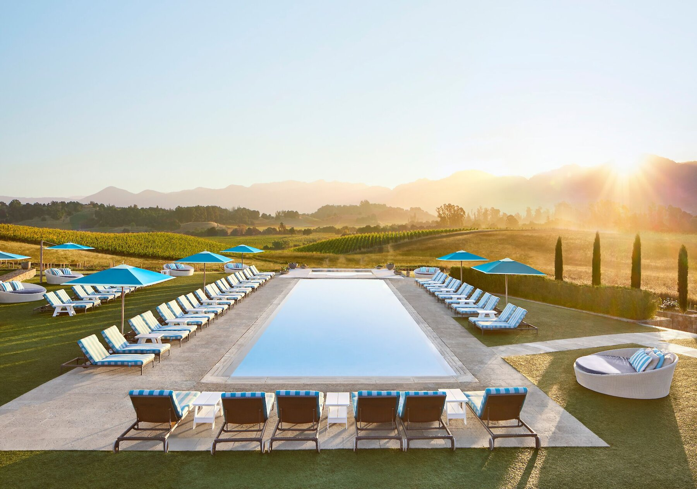
Overdue For A Refresh
Perfect For · Families, Multi-Couple Groups, Older Couples
Carneros has the potential to be a top-five property on this list, but it's overdue for a renovation. The grounds are sprawling and beautiful, every cottage has private outdoor space, and I actually prefer the location to Stanly Ranch — it feels much more like wine country.
The spa is one of the larger in Napa Valley. Though it's showing its age alongside the rooms.
Service has been hit or miss. Across multiple stays, consistency has been the main issue.
The two-bedroom residences are fantastic. I can't personally speak to the standard rooms, though most have private patios.
With a renovation, I honestly think this property could move several spots higher on this list.
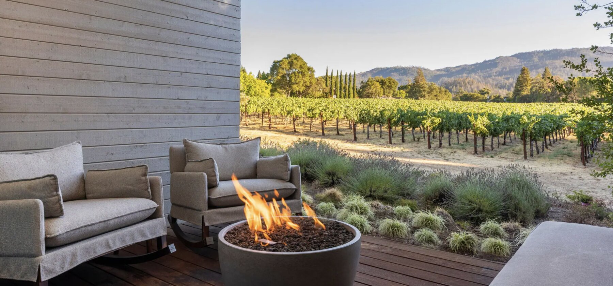
A Great Hotel, Not Quite Wine Country
Perfect For · Hyatt Loyalists, Younger Travelers
I like Alila quite a bit, but it doesn't have the charm or sense of place of the hotels above it — it feels more like a really nice modern hotel that happens to be in Napa. The location is excellent, and being able to walk into downtown St. Helena is a huge plus.
Book a vineyard-facing room. Significantly better than the alternatives if you can get one.
The pool is on the smaller side. A letdown compared to the other luxury resorts nearby.
Great for points travelers. Especially if you're using Hyatt points.
A good hotel, but it lacks some of the personality that keeps me coming back to the properties higher up on this list.